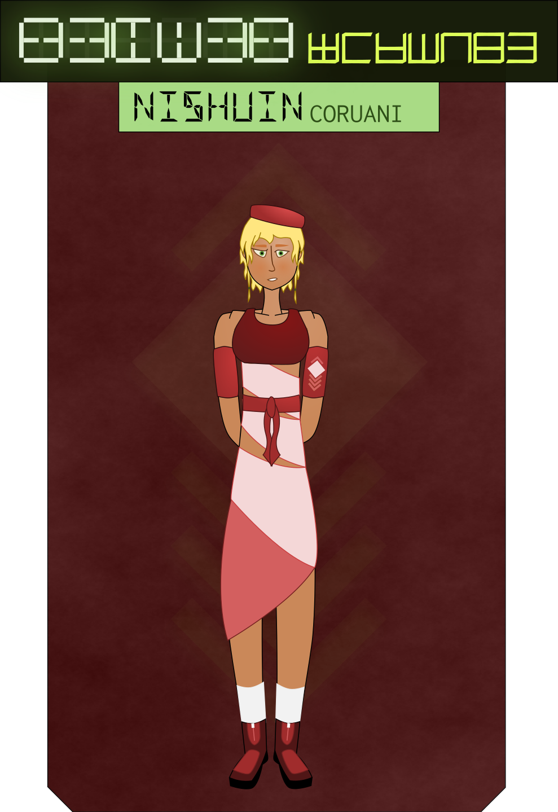

I’m laying on my bed and staring out the window when the handset on the desk chirps and lights up. I ease my aching back into a sitting position and reach out to pick it up. “Kestrel Winterblossom,†I murmur.
“Comrade Ambassador! This is Liaison Nishuin,†says a businesslike voice on the other end. “I’ve just received word from the kitchen. Dinner is ready. Would you like me to show you to the mess hall?”
Mess hall? They’re sending a foreign dignitary to eat alongside janitors and techs? I can’t actually tell if they’re trying to show disrespect or if they even put that much thought into it.
“Sure,†I reply. Food is food.
“Very good, comrade. I’ll be by to collect you shortly.”
I replace the receiver, and stand. My robe has bunched up a little around my thighs; I do my best to straighten it and keep my skin from showing. No wonder the People don’t try to be modest. It’s almost impossible in these outfits.
Or maybe it has something to do with the heat. We are in the tropics, after all.
I finger my passage card idly. It’s such a harmless little rectangle, but the machinery of embassy security is turning it into the focal point for my growing cabin fever. I tried, on a whim, to see how far I could get without it, and the door from my bunk wouldn’t even open.
I shake my head, tuck it into its sleeve in my robe, try to forget about it. I couldn’t help but notice that none of the Society citizens seem to be carrying their own cards, but doors open for them just like they do for me. Is there some sort of… invisible biometric system that automatically grants access to people of the right race?
Maybe I’m overthinking it. They probably just have identity implants. I’ve heard of a few League members doing things like that. Kids on Topaz carry their name and address around on a chip in their thigh so if they get lost, the police can bring them back home.
The door chimes, and I slide it back. Nishuin, standing on the other side, bows quickly, nearly bumping her head into me. “Comrade! Please follow me, if you will.”
“My staff are going to be hungry too—”
“They’ve already gone ahead, comrade Ambass— Kestrel. They were quite hungry.”
“Lead the way, then.”
“Of course.”
Nishuin may be small but she moves fast. Even with my longer legs, I keep catching myself falling behind as she paces briskly through the embassy.
“Please note the lighting on the portways,†Nishuin comments, pointing at a branching corridor. “If it lights up red when you approach, you are not authorized and alarms will sound if you pass through.”
“Why aren’t they just locked off?”
Nishuin shrugs. “I’ve never really thought about it. Having to open the same door again and again every time you go to another room would be very tiring, would it not?”
“Don’t people just work in their offices most of the time?”
Nishuin looks appalled. “We do not simply sit in one place for hours and hours, if that is what you are asking. That sounds unhealthy. This way.”
The portway to the mess hall lights up green as I approach, and I step through. I expected something… metallic and quiet and orderly and sterile, I guess. Instead, it has walls and floors built from bright, colorful wood, with huge bay windows at the eastern corner offering a view out into another bright courtyard. Well-cushioned chairs sit around tables of all sizes, Embassy officials chatting freely with each other. It feels almost… homey.
“Ambassador!†calls a voice with a thick Ranuir accent as I heap my plate with food. A woman at a table near the window rises and beckons to me. I approach, and suddenly recognize her — what the fuck is she doing here with all the little people?
“Ambassador!†I reply, bowing awkwardly. Ambassador Lifuin Cirsadi, head of the Society mission to the Republic of Sapphire, beams at me, and returns the gesture, then claps me on the shoulder. I return the greeting. Nishuin bows and darts away.
“You’ve only just arrived and you already fit in so well,†Lifuin says pleasantly. “They’ll like you on Tel Casran.”
“Oh. Thank you, ma’am.†I smile back.
“Please, sit with me.†The Ambassador moves her dishes to make room for mine. “I’ve been hoping I’d have a chance to meet you properly before you left.”
“I didn’t realize you even knew who I was,†I admit, sitting down across from her. She leans forward, eyes alight with interest.
“I’ve been reading your file, as it happens.”
“I have a file?”
“Of course you do.†Lifuin laughs. “No foreigner sets foot on Tel Casran without extensive background investigation.”
“Well. You have me at a disadvantage.†I rest my hands on my knee. “I’m honored you’d invite me to dine with you.”
“Oh, don’t mistake it for more than it is,†Lifuin replies. “I understand formal dinners are… a custom, among your people?”
I nod. “Are they not among yours?”
“The concept is faintly hilarious, really.†The Ambassador deftly spears a glazed slice of coilfruit and chews it thoughtfully for a moment. Swallowing, she continues, “For us, meals are about… coming together, I suppose? No rank, no status. They’re personal. They’re a time to relax and reconnect.”
“I was wondering why you were eating here, and not in a personal dining room somewhere.”
She cocks her head. “Personal dining room? Goodness, what a concept.†She takes another bite. “No, this is no state occasion, Ambassador. I rather hope we can meet without the shackles of protocol.”
“In that case, call me Kestrel,†I offer.
She turns her head again, slightly, expressing something I can’t quite grasp. There’s a lot of quick, subtle head movements in their body language, I’m starting to realize. But her smile comes across loud and clear.
“Then you may call me Lifuin, Kestrel.”
I lean back, and have to stop myself when I realize the chair back is moving with me. “So, Lifuin, what do your files have to say about me?”
“You’re a bit of a national hero, aren’t you?”
I laugh awkwardly. “Oh. Yes. Well.”
“Modesty.†Lifuin raises an eyebrow. “I don’t see that often from your people. It speaks well of you.”
“Well. Thank you.”
“I understand you lead a number of campaigns against the Imperial government during your Revolutionary War.”
I exhale, and turn my gaze to the window. “It’s not a part of my life I like to talk about.”
“No?†Her tone turns gentle, reassuring. “Can I ask why, Kestrel?”
“Have you ever been to war, Lifuin?”
“There are the annual drills, but no, I’ve never been deployed in real combat.”
“I fought. I killed. I gave orders. I watched my friends die.†I pull back a fold of the robe to reveal an old bullet scar. “I sat in pools of my own blood while bullets and artillery fire rained down and the dying screamed around me, wondering if the medevac chopper would get to me fast enough.†I take a deep, shuddering breath, trying to keep the memory from taking me over. “War takes part of you away, Lifuin.”
Lifuin entwines her fingers, rests her chin atop them. “I have know many battle-hardened soldiers, both among my own people and yours. And there is something I find curious.”
“Yes?”
“They all have a particular way about them. The way they talk, the way they move, the way they… interact with world around them. And yet, until just now, I see none of it in you.”
“I am not a soldier.†I clasp my hands in my lap, look Lifuin in the eye. “I went to war because of Sunfury’s vision. Because I believed in the world she wanted to build. Because I wanted, more than anything, to live in that world. I went to war because I wanted it to be the last war my people would ever fight.”
“And you won.”
“We won. We won and despite it all, I’m still alive. So I’ll be damned if I spend the rest of my life carrying that war with me. I want to be able to walk through a park and see flowers and bushes again, not hiding places for claymores. I want to stand on my balcony in the Capital and see homes around me, not sniper perches. I was a soldier so I could be a civilian again some day. So I could find a way to get back the part of me it took away.”
Lifuin reaches out and gently squeezes my shoulder. “You are a unique woman, Kestrel.”
I flinch at the touch, and Lifuin quickly lets go. “I’m sorry. I’ve overstepped, haven’t I?”
“It’s… fine. My people are… not so free with their hands.”
“I will endeavor to better understand your culture’s boundaries in the future.†She inclines her head apologetically. “I regret that I yet have little interpersonal experience with your people. My exposure has been mostly political and linguistic.”
“I’m starting to gather that it’s… normal to touch people you’ve just met in the Society. Between you and the guards, we’ve been… handled, somewhat.”
She nods. “I have notice your people seem to be… colder, I suppose. More distant from each other. It seems a sad way to be. Touch is important to us. It’s as much part of our language as our words.”
“Then maybe it’s something I should get used to. I am supposed to be a diplomat, after all.”
Lifuin leans forward. “Now that is interesting. Kestrel, I have spend time in the company of many different people, people of all colors and backgrounds and ideologies. Do you know what they almost all have in common?”
I rest my chin on my hands. “Schemes against your astropolitical interests?”
Lifuin chuckles. “Perhaps some. But almost everyone — Zyahua, Chanjesu, Kaparttu, Thalisan, or Khmai — stars and skies, especially the Khmai — for all their differences, for all the vastness of space and time separating them — they all alike are proud. From your President Silverdawn to the workers in your factories. They all want to tell you who they are. Where they come from. They want you to hear their tongue, look upon their dress, listen to their myths, eat of their food, take part in their customs. They want to be witnessed, they want to be told that they are real and that their history matters.
“But you. Here you stand, at ease in the clothes of my people. And all you have is questions. You, great war hero of the Revolution, wave away all interest in yourself and you ask how to take part in our customs. Barely arrived and yet you try to carry yourself like one of us. You follow our protocol as respectfully as if it were your own. That fascinates me, Kestrel.”
“Are your people that different?†I murmur. “What little of your ways they’ve let slip has been through force of habit. Everyone tries to treat us like they think we expect. They seem mortified when they fail. My liaison, Nishuin… she shook my hand when she met me. Speaks Zia Å¢ai with barely even an accent.”
“Indeed,†says Lifuin. “You see why I am fascinated.”
I pause to take a few bites, wash them down with a sip of water. “You see us as similar.”
“I see a humility in you I have only ever see from the People. I think it says good things about our future.†She swallows. “I must say, I develop a fondness for your world’s food. There are a few plants here I’ve recommended we add to our seedbanks, in fact.”
“I’m looking forward to trying Tel Casran cuisine.”
“Fair warning, it’s going to make you sick as a pien ÅŸai for a while.†Lifuin gestures with her knife. “Have you ever been offworld before?”
“I haven’t had the privilege.”
“Ah.†Lifuin winces. “You’re… in for a rough season, I’m afraid. Getting used to life aboard spacecraft, then the gravity of new world, then an entire new biosphere for your body to learn to cope with… things are going to get worse before they get better.”
I take a deep breath. “Well. I never did sign on for the easy jobs.”
“Yes, true. I suppose compared to some of what you’ve been through, this will be a mere inconvenience.”
“Are you trying to squeeze my war stories out of me, Ambassador?”
“That line usually works.”
“There’s a reason I don’t like to think about those times. Does the word shanvol mean anything to you?”
Lifuin stares at me. “Hali iufit lefenan…? What a wonder you are, Kestrel-ambassador. You even speak like one of us.”
“Don’t give me too much credit. I’ve just picked up the odd word here and there.”
Lifuin takes a sip from her glass, and regards me carefully. “Shanvol, you say? Your war scarred you that deeply?”
One word. For years, I’ve been crippled and tormented by my own memories. Fighting to keep face in front of a whole world watching my every move and listening with bated breath to my every word. Only one person ever knowing the true depth of my brokenness.
And now I can just say one word and they instantly understand.
And they care.
“It did.”
Lifuin inclines her head. “My deepest and most profound apologies to you, comrade Ambassador. I hope my insensitivity did not harm you too greatly. I have friends who suffer from shanvol. May your scars one day heal.”
“I… thank you. I’m…†I shake my head. “I’m still getting used to not having to hide them.”
Lifuin frowns. “Are they not respected among your people?”
“They are not. Until today, I didn’t even have a word for… what’s wrong with me.”
Lifuin smiles, and reaches out a hand. Hesitantly, I offer mine, and she squeezes it gently. “Silverdawn could not have chosen a better person to lead this legation.”
I laugh shakily. “Why in Haven would you say that?”
She releases me and sits back. “What is diplomacy about to you, Kestrel?”
“I… well. Making the galaxy a better place?”
“That’s a child’s answer. You can do better.”
I hesitate. “I suppose that’s what I’m here to find out.”
“So Silverdawn is sending you all the way to Tel Casran just for your own edification?”
“Fuck Silverdawn. I don’t give a shit what she wants.”
Lifuin laughs aloud. “What does she want, Kestrel?”
“Influence, intelligence, leverage, power. What does any woman on a throne want?†I shake my head. “I’m not here for her. I’m here for my people. For the Republic.”
“And what is it your people need?”
“Almost every man, woman, and child alive today was born under the den tsuang yoke. Every one of them grew up being to told to worship the Empress. They spent their lives working themselves to death so a few fat nobles and a handful of blackrobe justiciars could live a life of luxury and excess. All they knew how to be was pawns in someone else’s game of zhuang bo. Everything they were, everything they’d ever been was dictated to them by people who didn’t care if they lived or died. The War was the first time any of us ever got to be our own.
I fix my eyes on Lifuin. “You ask me what my people need? We need to learn. We need to build a new way of life for this new reality. The Empire is gone and it’s left the levers of power behind. We need to learn how to use them. And your people have had over a thousand years to figure out just that. That is why I’m here, Ambassador. To learn just what a socialist nation can be. To learn what the human spirit, unfettered by bourgeois arrogance, can accomplish in this universe.”
Lifuin lets out a low whistle. “You give a lot of speeches, don’t you?”
I laugh and look down, poking at my food. “Guilty as charged.”
“So to you, diplomacy is about learning?”
“I suppose so. What’s diplomacy about to you?”
Lifuin cracks a smile. “Making the galaxy a better place.”
“Uh-huh.”
“You know, before I was an ambassador, I was a spy. It’s not nearly as glamorous as you’d imagine,†she adds quickly. “It’s not even classified. I lived on Resplendent Ruby upon the Scepter of Righteous Command and kept track of commodity prices. I’d do things like get traders drunk and ranting about their latest raw deal, or wander through markets copying down whatever numbers I could find. Seed discontent where I could, too. It was a fun enough job for a girl who wanted too much excitement to stay at home but didn’t have the discipline or the stomach for active measures. I met a lot of fascinating people. Got assaulted by a lot of fascinating people too, but a silver sash in sovran means a lot more on the streets of the Empire than it does back home.
“There was this one serving girl. She was always there at my favorite tavern. Would work all day, morning to night. Pouring ale and keeping tabs and getting groped by half the clientele and trying to stay out of fights. Eventually I got to talking with her. Crow was her name. And do you know what Crow would do after every long day at the tavern?”
“What would she do?”
“She would go home, back to her little hovel along a dirt road over a butcher’s shop, and she’d take out a typewriter she spent months saving up for and she’d write. She wrote poems. She showed one to me, after I’d known her for a few months, like it was this big secret. And you know, they weren’t very good poems. They really weren’t. But she put her heart into them. And you could see it.
“Well, one day she got shivved in a brawl, and that was the end of her. And no one cared. She bled out in my arms when she could have lived because there wasn’t a real hospital for parsecs in any direction. They found another girl desperate for some coin and brought her in like they were changing out a burnt-out lightbulb. And nobody even noticed. I think I was the closest thing Crow had to a friend. She didn’t have time for friendship. She spent all her time making just barely enough coin to not starve on the street.”
Lifuin sighs, stirs her tea. “I broke into her flat before they found out she was gone. Collected all the little papers she’d left lying around. I still have them. They’re in a drawer in my desk, here in the embassy.†She takes a sip. “Do you know what makes me furious? The fact that little Crow never got a chance to become a great poet. There was nobody to teach her. She could never afford to buy poetry books. She was all on her own, and if she ever showed her writing to anyone else, they would have just laughed at her and told her to get back to work.
“There are Crows on every Imperial world. Billions and billions of them. Little people with little lives, with little sparks of passion that will never have the chance to strike a flame. They will live and die at the whim of an empty-headed bourgeoisie. Everything real and human in them systematically crushed out over decades of pointless, hopeless drudgery.”
Lifuin sets her cup down. “For me, diplomacy means giving the Crows a chance to spread their wings. Containing the Empress and building a bulwark against her empire of misery. Chipping away, year by year, world by world, at her sway over this galaxy. It means blowing on every little spark of passion my breath can reach.
“But I don’t need to tell you that. That’s exactly why you went to war, isn’t it, Kestrel-ambassador?”
I nod slowly. “You have a lot of stories, don’t you, Lifuin.”
“I can neither confirm nor deny.”
We eat in silence for a little while. The background chatter of the embassy personnel washes over me, a sea of faintly musical words I don’t understand. It’s soothing to listen to, in a way. It reminds me of the market when I was young. I catch myself trying to invent a narrative to fit with the rhythm, just like I did back then, wandering past Khmai merchants haggling with their customers. Lifuin clears her throat, bringing me back to the present.
“Kestrel?”
“Yes, Ambassador?”
“I hope one day I will be able to count you as a friend.”
I smile. “The feeling is mutual, Lifuin.”
